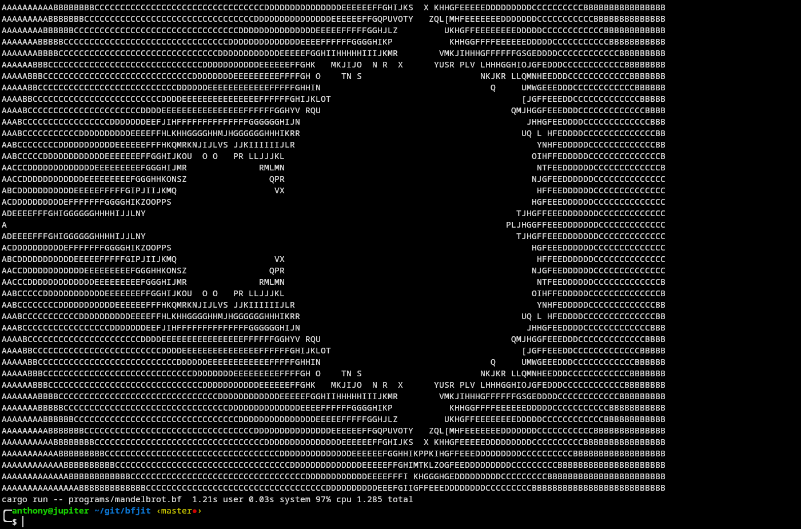

Computing
Compilation
bfjit
I wrote a JIT compiler for the bf programming language. It takes in a program as input, generates CPU instructions on the fly, and executes them, giving a big speed boost when compared to the interpreter. GitHub
Emulation
Chip8
I wrote a Chip 8 emulator in C that can play Chip 8 ROMS, draw graphics to the screen, and read keyboard input. The only feature it's lacking, is sound. GitHub
Raspberry Pi
Nextcloud instance
A Google Drive like program that I set up at home to sync my documents, pictues, contacts, and anything else I might want to sync with it. I have full control over it.
Remotely Controlled Car
A car I built using parts from the GopiGo project. It can be controlled via a bluetooth controller and can stream video as well, through a local web server running on it. GitLab
Video Games
Pypong
A pong clone written in Python and Pygame. GitLab
Grab Some Cake
A very simple game where you have to platform your way through simple levels to grab a slice of cake.
Web Development
Original Personal Site
I made a personal site for myself which contains links to my project, a blog that I had started but discontinued, and information on the tools I use on a daily basis. GitLab